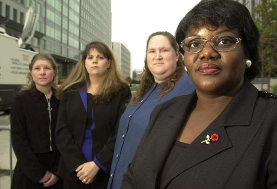

Basic Concepts Understand the ways that differences between women and men reflect biological factors, sociocultural influences, and the complex interplay between the two.
Research on Gender Today: Documenting and Understanding Gender Inequalities Learn how gender differences are a part of our social structure and create inequalities between men and women. Learn the forms these inequalities take in social institutions such as the workplace, the family, the educational system, and the political system in the United States and globally.
Unanswered Questions: Why Do Gender Inequalities Persist? Understand how sex segregation contributes to the gender gap in pay, learn about family-leave policies in other countries, explore the effects of gender inequality on men, and evaluate the competing explanations for the persistence of gender-based violence.
Most of us know that far fewer women than men hold leadership positions in business and politics today, yet we also know that women have made tremendous strides in education, politics, and the workplace over the past century. Business magazines regularly tout the accomplishments of women such as Safra Catz, who was named chief executive officer (CEO) of Oracle in 2014, and Mary Barra, who became CEO of General Motors the same year (that’s her at the start of the chapter). In 2017, four out of eight Ivy League universities were led by women presidents: Christina Paxson (Brown University), Martha Pollack (Cornell University), Drew Gilpin Faust (Harvard University), and Amy Gutmann (University of Pennsylvania). Given these highly visible accomplishments of women in business and technology, we might think that at least one-tenth (answer b) or one-quarter (answer c) is the correct answer. Yet, according to Fortune magazine, which tracks the CEOs of the nation’s top revenue-generating companies, women held just 27 of all Fortune 500 CEO positions in 2017. Stated otherwise, women held just 5.4 percent of all Fortune 500 CEO slots in 2017, although they account for roughly half of the total workforce (Brown, 2017). By 2019, these numbers had increased slightly, with 33 women holding CEO positions in Fortune 500 companies, a rate of 6.6 percent (Zillman, 2019).
Why do so few women hold leadership positions in business? This question is important because women are dramatically underrepresented in the upper echelons of business and industry, no matter the metric used. For instance, women account for 45 percent of all employees at Standard & Poor’s (S&P) 500 firms, yet they hold just 27 percent of all board seats and just 11 percent of top-earner positions (Catalyst, 2020b; Fitzgerald, 2019). Few would point to outright discrimination as the culprit, yet most experts say that discrimination often takes place in subtle and hard-to-prove ways. Climbing to the top-tier positions at competitive Wall Street and Silicon Valley firms requires round-the-clock work along with “really macho kinds of behavior,” including aggressiveness and even ruthlessness, according to Ilene Lang, president of Catalyst, a research organization focused on gender and work. These traits are at odds with traditional gender role socialization; “it is behavior that’s admired in men but despised in women,” Lang observes. Others point to lack of female mentors in corporate upper echelons and the tendency of some male decision makers to hold stereotypical and incorrect beliefs about what women are capable of doing. Others say that women are kicked off the corporate “fast track” when they start having children and their colleagues view them as unfit for competitive and time-consuming work.
Women are striking back against both overt and subtle forms of gender discrimination at major Wall Street firms. In the past decade, banks including Goldman Sachs, Wells Fargo, Deutsche Bank, Citigroup, and others have been targets of sex discrimination lawsuits. Kelley Voelker, a former vice president with Deutsche Bank’s securities lending desk, filed a sex-discrimination lawsuit against her employer in September 2011. Voelker claimed that despite consistently high performance reviews, Deutsche Bank denied her a promotion and eventually demoted her, one of its few female vice presidents, solely because of her gender and recent childbirth. Voelker said that shortly before she took her maternity leave for her first child, in 2003, her supervisor aired his doubts that she would return to work. In her lawsuit, Voelker accused the bank of “mommy-tracking” female employees, claiming that her supervisors “never took her seriously because she was a woman starting a family, and this was seen as a huge negative within the company.” She also pointed to excessively “macho” behavior from some of her male colleagues—including vulgar language in the office and taking clients to strip clubs—as further evidence that her work climate was not friendly to women.
Wall Street banking firms are not alone in discriminating against their women executives. In April 2017, media giant Fox News was besieged with multiple gender-discrimination lawsuits, while the U.S. Department of Labor charged Google with “systemic compensation disparities” on the basis of gender (Lam, 2017; Steel and Chokshi, 2017). The Google allegations were just the latest outcry against both subtle and blatant sexism in the male-dominated high-tech industry in California’s Silicon Valley. In July 2014, Whitney Wolfe, a cofounder and former executive at the dating app Tinder, filed a lawsuit against the company and its majority owner, the corporation IAC/InterActive Corp. According to the lawsuit, Wolfe said that she was subjected to “a barrage of horrendously sexist, racist, and otherwise inappropriate comments, emails and text messages” sent by Tinder’s chief executive and chief marketing officer. Yet her lawsuit also cited more subtle slights; Wolfe said that although she played an essential role in launching the app, her colleagues often omitted her name from media coverage about the firm. Wolfe recalled that her senior male colleagues said that a 24-year-old “girl founder” would undermine the company’s value (Wortham, 2014).
It’s not only female corporate executives and high-tech wizards who experience obstacles to their career advancement. One of the largest and most famous gender-discrimination lawsuits in recent history was filed against Walmart by Betty Dukes, a cashier. When Dukes started her job at Walmart in 1994, she had more than 20 years’ experience in retail and was eager to advance her career. When she approached her store manager about her desire to work her way up the ladder, she was brusquely dismissed. Dukes was undeterred. She performed well as a cashier, earning regular raises in her hourly wage. She repeatedly asked her manager for a promotion, and she requested opportunities to learn more about the store and take on more challenging assignments. She continued to be denied promotions and was not informed of postings for available positions or management training programs at the retailer. All the while, she watched her male associates get promoted, and she later learned that they were paid more than she was for the same job—although she had more years of work experience in retail and greater seniority at the company (U.S. Supreme Court, 2011).
The final straw came when Dukes was demoted from cashier to greeter. She contacted a lawyer and subsequently sued Walmart on the grounds that the retailer was violating the 1964 Civil Rights Act, which makes it illegal for employers to discriminate on the basis of gender, race, or religion. Dukes alleged that Walmart systematically paid women less than men who did the same jobs and promoted men to higher ranks at faster rates than women. When Dukes filed her case, her lawyer told her she wasn’t alone, and that many other women had also complained that they weren’t getting ahead with the multinational firm. The class-action lawsuit that was filed on behalf of roughly 1 million “similarly situated” plaintiffs eventually made its way to the Supreme Court.
Dukes and her fellow female Walmart employees were disappointed and angry when the Supreme Court threw out their case in June 2011. Observers say the verdict does not mean that discrimination did not happen in Dukes’s case. Rather, all nine Supreme Court justices thought there was not “significant proof” that Walmart “operated under a general policy of discrimination” against each and every one of the million or so women who filed the suit. Nor did they find proof that all the women were systematically victimized by a discriminatory “corporate culture” at Walmart (Toobin, 2011).
These far-ranging cases, which affect professional and working-class women alike, raise awareness about the overt and subtle ways that gender shapes all aspects of our lives. Many people who encounter someone such as Betty Dukes might make certain assumptions about her life. They might assume, for example, that a disproportionate number of women become cashiers because it is “natural” for women to have certain kinds of occupations, including retail or secretarial jobs. People who hear the story of Kelley Voelker might assume that women prefer to work part time, or they do so because part-time work is compatible with child-rearing, while full-time work on Wall Street might be “bad for the children.” Others might think that women’s underrepresentation in high-tech start-ups reflects a lack of scientific aptitude or entrepreneurial risk-taking among women. It is the job of sociologists to analyze these assumptions and to adopt a much wider view of our society. Sociology allows us to understand why women make up only a minuscule proportion of all top CEOs in the United States, why women are more likely than men to work in low-paying clerical and retail jobs, why women are likely to spend more time on child care, and why women as a whole have less economic and political power than men.
(From right) Betty Dukes, Patricia Surgenson, Stephanie Odle, and Christine Kwapnoski charged that Walmart systematically discriminated against its hourly and salaried female employees by denying them promotions and equal pay.
In this chapter, we will take a sociological approach to the exploration of gender differences and gender inequality. Gender is a way for society to divide people into two categories: “men” and “women.” According to this socially created division, men and women have different identities and social roles. Men and women are expected to think and act in different ways across most life domains. Gender also serves as a social status, since in almost all societies, men’s roles are valued more than women’s roles are (Bem, 1993). At the same time, the cultural expectation that men must be strong, silent breadwinners creates tremendous pressure, with some researchers going so far as to argue that these pressures can be physically and emotionally dangerous to men, especially those who do not live up to this expectation (Springer, 2010).
Sociologists are interested in explaining how society differentiates between women and men, and how these differences serve as the basis for social inequalities (Chafetz, 1990). Yet sociologists recognize that gender alone does not shape our life experiences. Rather, there are pronounced differences in women’s and men’s lives on the basis of race, social class, age, birth cohort, religion, nation of origin, and even one’s marital or parental status (Choo and Ferree, 2010). This recognition that gender intersects with other traits, such as race or social class, to affect our life chances is referred to by sociologists as the study of intersectionality (McCall, 2005). The distinctive challenges women and men face in wealthy Western nations also vary markedly from those experienced by individuals in the global south (Mohanty, 2013).
We will first identify core concepts related to sex and gender. Next, we will provide an overview of influential sociological and feminist theories that guide our understanding of gender. We will then review cutting-edge research on the ways that gender shapes our lives in the United States and throughout the world. In this section, we will focus on major social institutions such as the educational system, the workplace, the family, and the government. We will conclude by addressing several unanswered and controversial questions about the importance of gender in contemporary society.